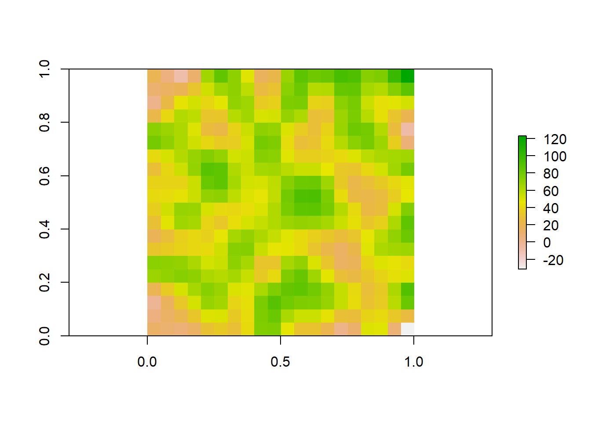

base_map <- ne_countries(type = 'countries', scale = 'small')
paged_table(data.frame(base_map))Maps in R
Where we meet the p-value!
Making maps is something many scientists need to do. Understanding the spatial relationship among sampling sites, populations, or cities can inform our understanding of analysis or results. While R is not primarily a geographic information system, it has the ability to produce maps through multiple libraries (the focus of this section). It can also be used to perform spatial analysis.
Making maps
Producing maps typically involves loading a background/base map of an area and then plotting sites or specific data points on it. For this to work, you have to make sure the different maps are using the same coordinate system and map projection. Put simply, coordinates (e.g., latitude and longitude) are used to specify a spot on the earth. Various coordinate systems exist, so you need to make sure the base map is using the same coordinates you are using to specify location. Part of different coordinate systems is related to the fact that dislaying a spherical earth on a flat screen/piece of paper is hard.
In order for it to end a “complete picture”, most projections distort various pieces of th earth.
Map data can be produced using vector or raster data. Vectors mean the software is using directions to draw points, lines, or polygons that represent space. Raster means the software is actually stitching together cells or images to represent space.
Vector approaches
For example, rnaturalearth supplies vector data from NaturalEarth for use in R. You can ask for country level data. Note that the data contains info on how to “draw” each country, but can also hold other data.
this can be plotted immediately
plot(base_map$geometry)
Other commands only focus on coastlines
coast <- ne_coastline()
plot(coast$geometry)
You can also turn this object into a dataframe (fortify) and use it in ggplot2
library(ggplot2)
ggplot(base_map) +
geom_sf()+
xlab("Longitude")+
ylab("Latitude") 
Once you have these layers, you can start adding your own sites
sites <- read.csv("https://raw.githubusercontent.com/jsgosnell/CUNY-BioStats/master/datasets/SurveySiteCoordinates.csv", strip.white = T, stringsAsFactors = T)Warning in read.table(file = file, header = header, sep = sep, quote = quote, :
incomplete final line found by readTableHeader on
'https://raw.githubusercontent.com/jsgosnell/CUNY-BioStats/master/datasets/SurveySiteCoordinates.csv'ggplot(base_map) +
geom_sf()+
xlab("Longitude")+
ylab("Latitude") +
geom_point(data = sites,
aes_string(x="Longitude",y="Latitude", group = NA), size = 10)Warning: `aes_string()` was deprecated in ggplot2 3.0.0.
ℹ Please use tidy evaluation idioms with `aes()`.
ℹ See also `vignette("ggplot2-in-packages")` for more information.
Raster approaches
So far we have worked with vector data, which uses points, lines, and polygons to represent spatial data. Another common data type used in spatial analyses is raster data. Rasters are simply gridded maps, with values attributed to each cell. These are somewhat analagous to images, where each pixel in an image has certain attribute (color). The advantage of this type of data is that we can store large amounts of information for spatial analyses. We are going to illustrate how these work with some toy data first.
# Load the raster package
# Set the dimensions of the raster (rows and columns)
nrows <- 10
ncols <- 10
# Create a raster with random values
raster_data <- raster(matrix(round(runif(n = nrows * ncols, min = 0, max = 100), 0), nrow = nrows))
# Plot the raster
plot(raster_data)As we can see, the resulting image is a grid with 10 rows and 10 columns. Each cell (sometimes called pixel or grain) has some numerical value between 0 and 100. Associated with each value is a color, with a color ramp to the right that shows how color relates to range of values. Right now our cell values are arbirarty, but they could be any information that you would want to map spatially. For example, imagine this raster was a map of a town and the value of each cell was a measure of population density at that location. We would want to know more about the attributes of the raster before doing any analyses. Lets briefly take a look at the attributes
raster_dataclass : RasterLayer
dimensions : 10, 10, 100 (nrow, ncol, ncell)
resolution : 0.1, 0.1 (x, y)
extent : 0, 1, 0, 1 (xmin, xmax, ymin, ymax)
crs : NA
source : memory
names : layer
values : 0, 99 (min, max)There are several attributes given to us. They are:
Dimensions: The size (number of cells) of the raster
Resolution: The size of each cell. Given in units of the axis, often square meters or arc minutes
Extent: The geographic limits of the raster
CRS: Coordinate reference system used by raster. This is how the map is projected
Values: The range of values among raster cells
Some of these attributes are neccesary to know for things like data processing, but they are also relevent for general study design. For example, resolution will likely influence your analyses. If the value of each cell was a measure of population density, there will be different patterns across scales. A 5km x 5km cell will capture population density at a finer scale than a 10km x 10km cell. Therefore it is important to consider how the scale of your data impacts the questions you are trying to ask. Luckily, there are ways we can manipulate raster data for our analyses.
Take our previous raster that we made. Say the patterns we were interested in do not occur over finer spatial scales, and we want to resample our data so it is at a coarser resolution. Instead of getting a new map of population densities with larger cell sizes, we can simply resample our previous raster by aggregating multiple smaller cells together.
# Aggregate the raster to a 5x5 raster by taking the mean value of each 2x2 cell block
aggregated_raster <- aggregate(raster_data, fact = 2, fun = mean)
# Plot the aggregated raster
plot(aggregated_raster)
We could also do the reverse, where we resample our raster to a finer resolution. Our original raster was at a resolution of 10x10. We can use bilinear interpolation to increase the resolution to 20x20. This method estimates the value of these new pixels based on weighted averages of surrounding cells.
#Make raster with parameters that we want to resample to
template_raster <- raster(matrix(round(runif(100, min = 0, max = 100), 0), nrow = 20, ncol = 20))
finer_raster <- resample(raster_data, template_raster, method = "bilinear")
# Plot the raster
plot(finer_raster)
Lets look at all three of our rasters sampled at different resolutions to visualize how these patterns change.
plot(aggregated_raster)plot(raster_data)
plot(finer_raster)
Now lets illustrate how biologist work with rasters using some real world data. Two common sources of spatial data used by ecologists are species occurences and climate rasters. Species occurences are lat/lon coordinates of where an individual of a species has been observed or collected. This type of data can be found in online databases such as the Global Biodiversity Information Facility (GBIF; https://www.gbif.org/). Climate rasters are maps of variables relating to precipitation and temperature. The 19 bioclimatic variables from Worldclim (https://www.worldclim.org/data/bioclim.html) are commonly used by researchers. We are going to show how rasters of climate can be used to gain information about a species.
We can download this data straight from these sources into R using the rgbif and raster packages. First we will obtain occurence data. We can do any species. Here we will choose the moose (Alces alces)
species_name <- "Alces alces"
# Search for occurrences of the species using GBIF
occ_search <- occ_search(scientificName = species_name, return = "data")Warning in pchk(return, "occ_search"): `return` param in `occ_search` function is defunct as of rgbif v3.0.0, and is ignored
See `?rgbif` for more information.# Check the occurrence data
head(occ_search$data)# A tibble: 6 × 125
key scientificName decimalLatitude decimalLongitude issues datasetKey
<chr> <chr> <dbl> <dbl> <chr> <chr>
1 4507996075 Alces alces (Li… 53.2 -113. cdc,c… 50c9509d-…
2 4507977218 Alces alces (Li… 61.2 -150. cdc,c… 50c9509d-…
3 4507703289 Alces alces (Li… 61.2 -150. cdc,c… 50c9509d-…
4 4507728240 Alces alces (Li… 61.2 -150. cdc,c… 50c9509d-…
5 4507977234 Alces alces (Li… 61.2 -150. cdc,c… 50c9509d-…
6 4507755396 Alces alces (Li… 38.8 -107. cdc,c… 50c9509d-…
# ℹ 119 more variables: publishingOrgKey <chr>, installationKey <chr>,
# hostingOrganizationKey <chr>, publishingCountry <chr>, protocol <chr>,
# lastCrawled <chr>, lastParsed <chr>, crawlId <int>, basisOfRecord <chr>,
# occurrenceStatus <chr>, taxonKey <int>, kingdomKey <int>, phylumKey <int>,
# classKey <int>, orderKey <int>, familyKey <int>, genusKey <int>,
# speciesKey <int>, acceptedTaxonKey <int>, acceptedScientificName <chr>,
# kingdom <chr>, phylum <chr>, order <chr>, family <chr>, genus <chr>, …We see that there is a lot of associated data for each occurence on GBIF. While this can be useful, we are only interested in lat/lon coordinates here.
Now we will download our climate rasters. We have to download all 19 bioclim variables, but we will only look at bio1, mean annual temperature. These rasters contain lots of data and can be slow to process, so we will download rasters at the coarsest possible resolution to save RAM.
# Download a world elevation raster (DEM) from WorldClim
clim_data <- getData(name = "worldclim", var = "bio", res = 10, path = "data" )Warning in getData(name = "worldclim", var = "bio", res = 10, path = "data"): getData will be removed in a future version of raster
. Please use the geodata package insteadtmean <- clim_data$bio1 #Seperate raster layer of interest
# Plot the raster
plot(tmean)Ok so now we have a raster of annual mean temperature and coordinates of moose occurences. Lets see how occurences are distributed across our raster.
occurrences <- occ_search$data
# Filter out rows with NA values in latitude or longitude columns
occurrences <- occurrences[complete.cases(occurrences[, c("decimalLongitude", "decimalLatitude")]), ]
coordinates(occurrences) <- c("decimalLongitude", "decimalLatitude")
# Plot occurrence points on the raster
plot(tmean)
points(occurrences, col = "red", pch = 20)
Qualitatively, we can see that moose are distributed in areas with cooler mean annual temperatures. This is because the colors on the map where it occurs are yellow - red, which is at the bottom of the color ramp on the right (Note that temperatures here are reported in degrees celcius * 10). To quantify this relationship, we can sample the raster values at each occurence point
# Extract raster values at occurrence points
raster_values <- extract(tmean, occurrences)
#Calculate mean
mean(raster_values/10)[1] 3.641884median(raster_values/10)[1] 3.7# Create a histogram of means
hist(raster_values/10, breaks = 20, col = "skyblue", border = "black", xlab = "Annual Mean Temp (°C)", ylab = "Frequency", main = "Frequency of Mean Annual Temperatures for A. alces")We find that distribution of mean annual temperatures experienced by moose are centered around 3.5 °C, with a mean value of 3.4002.
Here we have shown how raster data can be used in combination with other spatial data to answer sceintific questions. Rasters are incredibly powerful for researchers because they both hold lots of information and are often widely available to the public. Studying complex spatial patterns and processes is neccesary for climate modeling, resource management, public health, agriculture, and many other scientific disciplines that provide a basis for informed decision making.
Google api
Note using google maps now requires an api. This can be created @ , but should not be shared with others. To use yours here, save it in a file called
source("content/extensions/private_info.R")register_google(key = key)
map <- get_map(location =c(lon = mean(sites$Longitude), lat = mean(sites$Latitude)),
zoom = 12, maptype = "satellite")ℹ <https://maps.googleapis.com/maps/api/staticmap?center=40.614645,-73.838277&zoom=12&size=640x640&scale=2&maptype=satellite&language=en-EN&key=xxx>#toner is another option
ggmap(map)+
# xlab(expression(paste("Longitude ", ( degree~W)))) +
# ylab(expression(paste("Latitude ", ( degree~N)))) +
xlab(expression(paste("Longitude"))) +
ylab(expression(paste("Latitude"))) +
geom_point(data = sites,
aes(x=Longitude, y=Latitude, group = NA,
color = Location),
shape = 21, size = 5, stroke = 1.5) +
#scale_x_continous (labels=abs) to get rid of negatives
# scale_x_continuous(labels=abs) +
scale_color_manual(values = c("white", "yellow")) +
annotate("text", label="Yellow Bar Hassock", x=-73.85, y=40.59, size=10,
# color = hue_pal()(2)[2]) +
color = "yellow") +
annotate("text", label="Black Bar Marsh", x=-73.82, y=40.64, size=10,
# color = hue_pal()(2)[1]),
color = "white") So far we have worked with vector data, which uses points, lines, and polygons to represent spatial data. Another common data type used in spatial analyses is raster data. Rasters are simply gridded maps, with values attributed to each cell. These are somewhat analagous to images, where each pixel in an image has certain attribute (color). The advantage of this type of data is that we can store large amounts of information for spatial analyses. We are going to illustrate how these work with some toy data first.
# Load the raster package
library(raster)
# Set the dimensions of the raster (rows and columns)
nrows <- 10
ncols <- 10
# Create a raster with random values
raster_data <- raster(matrix(round(runif(n = nrows * ncols, min = 0, max = 100), 0), nrow = nrows))
# Plot the raster
plot(raster_data)As we can see, the resulting image is a grid with 10 rows and 10 columns. Each cell (sometimes called pixel or grain) has some numerical value between 0 and 100. Associated with each value is a color, with a color ramp to the right that shows how color relates to range of values. Right now our cell values are arbirarty, but they could be any information that you would want to map spatially. For example, imagine this raster was a map of a town and the value of each cell was a measure of population density at that location. We would want to know more about the attributes of the raster before doing any analyses. Lets briefly take a look at the attributes
raster_dataclass : RasterLayer
dimensions : 10, 10, 100 (nrow, ncol, ncell)
resolution : 0.1, 0.1 (x, y)
extent : 0, 1, 0, 1 (xmin, xmax, ymin, ymax)
crs : NA
source : memory
names : layer
values : 1, 99 (min, max)There are several attributes given to us. They are:
Dimensions: The size (number of cells) of the raster
Resolution: The size of each cell. Given in units of the axis, often square meters or arc minutes
Extent: The geographic limits of the raster
CRS: Coordinate reference system used by raster. This is how the map is projected
Values: The range of values among raster cells
Some of these attributes are neccesary to know for things like data processing, but they are also relevent for general study design. For example, resolution will likely influence your analyses. If the value of each cell was a measure of population density, there will be different patterns across scales. A 5km x 5km cell will capture population density at a finer scale than a 10km x 10km cell. Therefore it is important to consider how the scale of your data impacts the questions you are trying to ask. Luckily, there are ways we can manipulate raster data for our analyses.
Take our previous raster that we made. Say the patterns we were interested in do not occur over finer spatial scales, and we want to resample our data so it is at a coarser resolution. Instead of getting a new map of population densities with larger cell sizes, we can simply resample our previous raster by aggregating multiple smaller cells together.
# Aggregate the raster to a 5x5 raster by taking the mean value of each 2x2 cell block
aggregated_raster <- aggregate(raster_data, fact = 2, fun = mean)
# Plot the aggregated raster
plot(aggregated_raster)
We could also do the reverse, where we resample our raster to a finer resolution. Our original raster was at a resolution of 10x10. We can use bilinear interpolation to increase the resolution to 20x20. This method estimates the value of these new pixels based on weighted averages of surrounding cells.
#Make raster with parameters that we want to resample to
template_raster <- raster(matrix(round(runif(100, min = 0, max = 100), 0), nrow = 20, ncol = 20))
finer_raster <- resample(raster_data, template_raster, method = "bilinear")
# Plot the raster
plot(finer_raster)
Lets look at all three of our rasters sampled at different resolutions to visualize how these patterns change.
plot(aggregated_raster)plot(raster_data)
plot(finer_raster)Now lets illustrate how biologist work with rasters using some real world data. Two common sources of spatial data used by ecologists are species occurences and climate rasters. Species occurences are lat/lon coordinates of where an individual of a species has been observed or collected. This type of data can be found in online databases such as the Global Biodiversity Information Facility (GBIF; https://www.gbif.org/). Climate rasters are maps of variables relating to precipitation and temperature. The 19 bioclimatic variables from Worldclim (https://www.worldclim.org/data/bioclim.html) are commonly used by researchers. We are going to show how rasters of climate can be used to gain information about a species.
# Load necessary libraries
library(rgbif)We can download this data straight from these sources into R using the rgbif and raster packages. First we will obtain occurence data. We can do any species. Here we will choose the moose (Alces alces)
species_name <- "Alces alces"
# Search for occurrences of the species using GBIF
occ_search <- occ_search(scientificName = species_name, return = "data")Warning in pchk(return, "occ_search"): `return` param in `occ_search` function is defunct as of rgbif v3.0.0, and is ignored
See `?rgbif` for more information.# Check the occurrence data
head(occ_search$data)# A tibble: 6 × 125
key scientificName decimalLatitude decimalLongitude issues datasetKey
<chr> <chr> <dbl> <dbl> <chr> <chr>
1 4507996075 Alces alces (Li… 53.2 -113. cdc,c… 50c9509d-…
2 4507977218 Alces alces (Li… 61.2 -150. cdc,c… 50c9509d-…
3 4507703289 Alces alces (Li… 61.2 -150. cdc,c… 50c9509d-…
4 4507728240 Alces alces (Li… 61.2 -150. cdc,c… 50c9509d-…
5 4507977234 Alces alces (Li… 61.2 -150. cdc,c… 50c9509d-…
6 4507755396 Alces alces (Li… 38.8 -107. cdc,c… 50c9509d-…
# ℹ 119 more variables: publishingOrgKey <chr>, installationKey <chr>,
# hostingOrganizationKey <chr>, publishingCountry <chr>, protocol <chr>,
# lastCrawled <chr>, lastParsed <chr>, crawlId <int>, basisOfRecord <chr>,
# occurrenceStatus <chr>, taxonKey <int>, kingdomKey <int>, phylumKey <int>,
# classKey <int>, orderKey <int>, familyKey <int>, genusKey <int>,
# speciesKey <int>, acceptedTaxonKey <int>, acceptedScientificName <chr>,
# kingdom <chr>, phylum <chr>, order <chr>, family <chr>, genus <chr>, …We see that there is a lot of associated data for each occurence on GBIF. While this can be useful, we are only interested in lat/lon coordinates here.
Now we will download our climate rasters. We have to download all 19 bioclim variables, but we will only look at bio1, mean annual temperature. These rasters contain lots of data and can be slow to process, so we will download rasters at the coarsest possible resolution to save RAM.
# Download a world elevation raster (DEM) from WorldClim
clim_data <- getData(name = "worldclim", var = "bio", res = 10)Warning in getData(name = "worldclim", var = "bio", res = 10): getData will be removed in a future version of raster
. Please use the geodata package insteadtmean <- clim_data$bio1 #Seperate raster layer of interest
# Plot the raster
plot(tmean)
Ok so now we have a raster of annual mean temperature and coordinates of moose occurences. Lets see how occurences are distributed across our raster.
occurrences <- occ_search$data
# Filter out rows with NA values in latitude or longitude columns
occurrences <- occurrences[complete.cases(occurrences[, c("decimalLongitude", "decimalLatitude")]), ]
coordinates(occurrences) <- c("decimalLongitude", "decimalLatitude")
# Plot occurrence points on the raster
plot(tmean)
points(occurrences, col = "red", pch = 20)Qualitatively, we can see that moose are distributed in areas with cooler mean annual temperatures. This is because the colors on the map where it occurs are yellow - red, which is at the bottom of the color ramp on the right (Note that temperatures here are reported in degrees celcius * 10). To quantify this relationship, we can sample the raster values at each occurence point
# Extract raster values at occurrence points
raster_values <- extract(tmean, occurrences)
#Calculate mean
mean(raster_values/10)[1] 3.641884median(raster_values/10)[1] 3.7# Create a histogram of means
hist(raster_values/10, breaks = 20, col = "skyblue", border = "black", xlab = "Annual Mean Temp (°C)", ylab = "Frequency", main = "Frequency of Mean Annual Temperatures for A. alces")
We find that distribution of mean annual temperatures experienced by moose are centered around 3.5 °C, with a mean value of 3.4002.
Here we have shown how raster data can be used in combination with other spatial data to answer sceintific questions. Rasters are incredibly powerful for researchers because they both hold lots of information and are often widely available to the public. Studying complex spatial patterns and processes is neccesary for climate modeling, resource management, public health, agriculture, and many other scientific disciplines that provide a basis for informed decision making.
Next steps
R can also be used to interact with more map-focused software like QGIS.